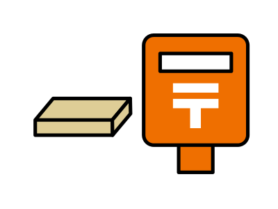

最近こんな「お悩み」
ありませんか…？
- 栄養不足が気になる
- 生活習慣や食習慣がの乱れている
- 仕事が忙しく疲れがとれない
- 美容と健康が気になる
- 毎朝スッキリ起床できない
そんなあなたには…

Native Oneは、尿検査に基づいて、あなたの栄養状態を可視化し、それに合わせてオーダーメイドできるサプリメントです。
Native Oneの4つのポイント
-
POINT
1
専門家のアドバイス
尿検査をしながらあなたの栄養状態を評価し、必要な栄養素をカスタマイズして提供します。
-
POINT
2
無料カウセリング
いつでもお気軽に専門家に質問でき、カウンセリングを受けられます。 あなたの健康に関する疑問や不安を解消します。

-
POINT
3
専用カスタマイズ
栄養不足の原因や必要な栄養素について、当社の専門家が詳しく説明します。あなたの健康のパートナーとしてお手伝いします。
-
POINT
4
高品質な日本由来の成分
Native Oneは、高品質な成分にこだわり、安心・安全な素材を厳選し製造しています。純度の高い原材料で、質の高いサプリメントをご提供します。
Native Oneの安全性
小山彰医学博士
Native
Oneは国内工場で製造し、健康補助食品GMPを取得した施設で厳しい品質検査をクリアしています。原材料から製品の出荷まで一貫管理。高価な成分を排除し、純度の高い栄養原料を選び、あなたの毎日の安心と安全を確保します。
また、NativeOneはサプリ研究第一人者で、TBS系列「知識の泉」で講義を行う小山彰医学博士の監修を受けています。
97%がリピート希望!
ご購入者様からの
「実感の声」 を
続々といただいています！
voice
1
納得感や安心感を感じています！
これまで色々なサプリを試してきましたが、どれが本当に効果があるのか実感できていませんでした。でもNative Oneは尿検査で、足りない栄養素がわかった上で、自分に合うサプリメントを購入できるため、納得感や安心感を感じています！
アイさん 30代 主婦
voice
2
専用カスタマイズが私にぴったり
Native Oneで尿検査をして、足りない栄養素を知ることができました。そのデータをもとにカスタマイズされたサプリは、まさに私専用！効果を実感しています。自分に合った栄養補給で、体調も気持ちも前向きに変わってきました。
ユキさん 20代 会社員
voice
3
元気な一日をスタートできる！
Native Oneの尿検査で自分に必要な栄養素が明確になりました。カスタマイズされたサプリのおかげで、毎朝元気に起きられるようになり日々の活力が格段にアップしました！この調子で健康的な生活を続けていきたいです。

コズエさん 40代 主婦
Native Oneのお届け手順
-
STEP
1
オンライン申し込み
Native Oneの製品ページから、アンケートとお客様情報を入力します。
-
STEP
2
尿検査キットの受け取り
アンケート回答から2〜3日前後で尿検査キットがご自宅に届きます。
 -
STEP
3
尿検査
尿検査キットを使用して、自宅で尿検査を行います。詳しい手順はキットに含まれています。収集したサンプルを提供し、結果が分析されます。
-
STEP
4
カスタマイズと製造
尿検査の結果をもとに、Native Oneの専門家がお客様に合ったサプリメントのカスタマイズを行いその後、サプリメントが製造されます。
よくある質問
-
Q
定期便は解約できますか？
定期便は次回お届け予定日の7日前までにご連絡いただければ、解約可能です。解約や一時停止、商品の変更を希望される場合は、カスタマーサポートまでお気軽にご連絡ください。
-
Q
支払い方法の種類は？
当社では、クレジットカード、デビットカード、PayPal、銀行振込をご利用いただけます。
-
Q
カスタマイズの変更は途中でできますか？
定期便の商品内容のカスタマイズ変更は、次回お届け予定日の10日前までにご連絡いただければ、途中での変更が可能です。ご希望の変更がある場合は、いつでもお知らせください。
-
Q
サプリメントが合わなかった場合返品は可能ですか？
サプリメントがお客様に合わないと感じられた場合は、商品到着後30日以内であれば返品を承ります。返品に関する詳細は、カスタマーサポートまでお問い合わせください。
-
Q
他のサプリメントとの服用はできますか？
当社のサプリメントは、一般的に他のサプリメントとの併用が可能ですが、個人の健康状態や既存の医薬品との相互作用を考慮し、専門の医療提供者に相談することをお勧めします。